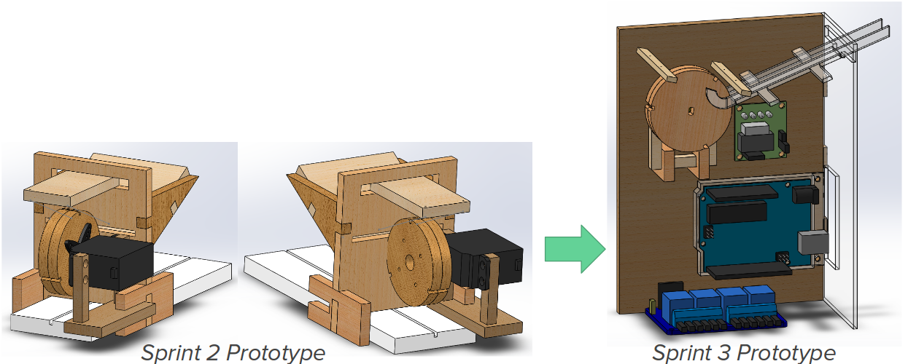
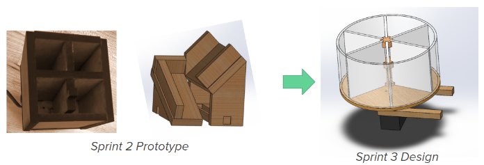
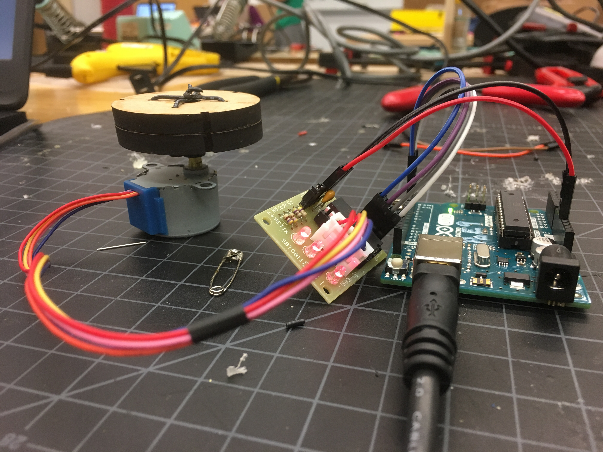

During Sprint 2, we did a lot of work on individual subsystems, and managed to make an integrated prototype of our resistance tester. This sprint, we hope to continue to integrate, and hopefully create our minimum viable product.
Mechanical
This sprint, we redesigned the ramp mechanism. Instead of a feeder with a slot to let resistors through, we started work on a sled shape with a gap large enough to fit the notched wheel. This made it so that the resistors could fall all the way to the end of the ramp and wait to roll into one of the wheel notches.
 Updated ramp design.This increased the reliability of getting resistors onto the wheel once they made it down to the place where the ramp and the wheel met. The wheel was even able to handle small lines of resistors if they were already in place. However, it was difficult to get the resistors to this position. Though the ramp was made to be a little larger than the wide part of the resistors to keep this portion centered, the resistors were still able to jump out of place and slide down wildly, ultimately landing in the wrong orientation. This meant that the wheel was unable to get to them, and, depending on their position, instead tried to break them or the system itself.
In order to fix this, we will redesign the ramp. It may be a little shorter to give the resistors less space to fall out of orientation and may have more guides to keep the wide part of the resistor in the middle.
We also redesigned our sorting system to be more streamlined and lighter. The old containment unit was blocky and made of MDF, which meant it would have been too cumbersome to be effective. Our new design should be easier for the servo to handle and contains more compartments to fit resistors.
 Updated sorting design.Now that we have a sorting containment unit, we need a way to get the resistors into it. We are hopeful that we will be able to integrate the sorter into the system with a ramp that orients the resistors correctly before they fall into the sorter unit.
During this sprint, we learned the importance of communication. Early on, when we determined that we should use a stepper motor, the programming and mechanical subteams were thrilled to find that it would only work in one direction, since that was all that was needed. However, upon getting the stepper, the subteams didn’t think to reconvene to discuss which way was the right way to spin. Long story short, this resulted in the sprint 3 model being built with the stepper motor facing the wrong direction. This caused extra work on both the mechanical and programmatic ends; for sprint 3, the programming team needed to figure out how to get the stepper to run backwards, and for sprint 4, mechanical will need to shift around the design such that the stepper is spinning in the right direction.
Computing
We learned from last sprint that a continuous servo did not work the way we expected--because of how the servo is made continuous, the servo is no longer able to take a desired position as the input. We learned of stepper motors--motors that could rotate infinitely, but with precise control over its position.
 Testing the motion of the wheel with the new stepper motor.We used the BYJ48 stepper motor, and using this Instructable we were able to get the stepper to turn. We adapted the code that allowed the stepper to turn backwards (this particular stepper could not turn backwards using the library’s methods), due to a moment of weakness and lack of communication between the computing and electrical teams that caused the stepper to be mounted such that its forward turning motion turns backwards.
Electrical
 Updated circuit schematic for measuring resistance of a large range of values.
Updated circuit schematic for measuring resistance of a large range of values.
Goals For Next Sprint
- Last iteration of resistor dispensing system.
- Final integration of digital potentiometer and relays into voltage divider circuit.
- Final design and implementation of resistor sorting system.
- Polish final product!